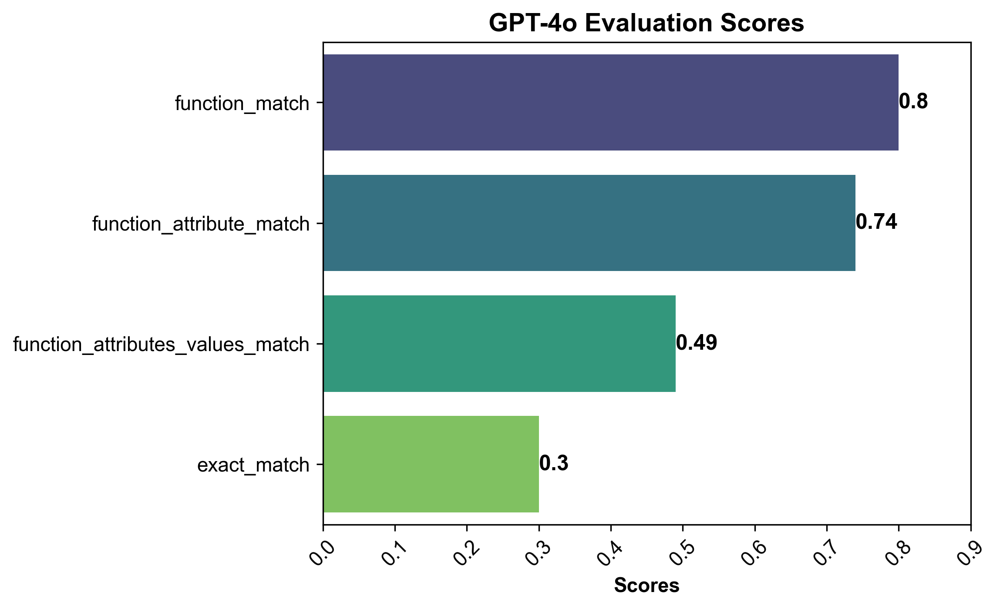

Part I: Baseline Evaluation of GPT-4o for Functional Representation Extraction
Introduction
Extracting structured data from unstructured texts allow us to condense the information present in the text. This representation then can be used for efficient indexing and other downstream RAG applications.
I want to evaluate GPT-4o’s performance in extracting structural data, specifically, functional representation, from the unstructured domain-specific text. I will use ViGGO dataset to evaluate it on custom evaluation criteria and will set it as baseline performance for that can be used for comparison in future work with other models such as Claude, Gemini, and custom fine-tuned open-source models.
ViGGO Dataset
This is a dataset for generating text opinions in the video game domain. Strictly speaking, it is intended to generate coherent conversational responses based on input functional representations (set of attributes and values).
However, I use the reverse task, where I generate structured functional representations from the given text input. A typical ViGGO dataset example has the output structured functional representation consisting of a single function with attributes and attribute values.
Text:
You said that you liked Crysis. Do you often play first person games from Crytek Frankfurt?
Functional Representation:
verify_attribute(name[Crysis], developer[Crytek Frankfurt], rating[good], player_perspective[first person])The function and attributes must be one of the following, respectively:
Function:
['inform', 'request', 'give_opinion', 'confirm', 'verify_attribute',
'suggest', 'request_explanation', 'recommend', 'request_attribute']
Attributes:
['name', 'release_year', 'esrb', 'genres', 'platforms', 'available_on_steam',
'has_linux_release', 'has_mac_release', 'specifier', 'rating',
'player_perspective', 'has_multiplayer', 'developer', 'exp_release_date']Note: Since I am not training/fine-tuning any model, I will only consider the ViGGO validation datasetfor this exercise.
Prompt for generating the functional representation
I use modified version of prompt template used in Anyscale’s blog for the ViGGO dataset. The prompt template is a few-shot prompt with examples from each function category to assist the model in understanding the intended output response representation.
PROMPT_TEMPLATE = """
Given a target sentence construct the underlying meaning representation of the input sentence as a single function with attributes and attribute values.
This function should describe the target string accurately and the function must be one of the following ['inform', 'request', 'give_opinion', 'confirm', 'verify_attribute', 'suggest', 'request_explanation', 'recommend', 'request_attribute'].
The attributes must be one of the following: ['name', 'exp_release_date', 'release_year', 'developer', 'esrb', 'rating', 'genres', 'player_perspective', 'has_multiplayer', 'platforms', 'available_on_steam', 'has_linux_release', 'has_mac_release', 'specifier']. The order your list the attributes within the function must follow the order listed above. For example the 'name' attribute must always come before the 'exp_release_date' attribute, and so forth.
For each attribute, fill in the corresponding value of the attribute within brackets. A couple of examples are below. Note: you are to output the string after "Output: ". Do not include "Output: " in your answer.
Example 1)
Sentence: Dirt: Showdown from 2012 is a sport racing game for the PlayStation, Xbox, PC rated E 10+ (for Everyone 10 and Older). It's not available on Steam, Linux, or Mac.
Output: inform(name[Dirt: Showdown], release_year[2012], esrb[E 10+ (for Everyone 10 and Older)], genres[driving/racing, sport], platforms[PlayStation, Xbox, PC], available_on_steam[no], has_linux_release[no], has_mac_release[no])
Example 2)
Sentence: Were there even any terrible games in 2014?
Output: request(release_year[2014], specifier[terrible])
Example 3)
Sentence: Adventure games that combine platforming and puzzles can be frustrating to play, but the side view perspective is perfect for them. That's why I enjoyed playing Little Nightmares.
Output: give_opinion(name[Little Nightmares], rating[good], genres[adventure, platformer, puzzle], player_perspective[side view])
Example 4)
Sentence: Since we're on the subject of games developed by Telltale Games, I'm wondering, have you played The Wolf Among Us?
Output: recommend(name[The Wolf Among Us], developer[Telltale Games])
Example 5)
Sentence: Layers of Fear, the indie first person point-and-click adventure game?
Output: confirm(name[Layers of Fear], genres[adventure, indie, point-and-click], player_perspective[first person])
Example 6)
Sentence: I bet you like it when you can play games on Steam, like Worms: Reloaded, right?
Output: suggest(name[Worms: Reloaded], available_on_steam[yes])
Example 7)
Sentence: I recall you saying that you really enjoyed The Legend of Zelda: Ocarina of Time. Are you typically a big fan of games on Nintendo rated E (for Everyone)?
Output: verify_attribute(name[The Legend of Zelda: Ocarina of Time], esrb[E (for Everyone)], rating[excellent], platforms[Nintendo])
Example 8)
Sentence: So what is it about the games that were released in 2005 that you find so excellent?
Output: request_explanation(release_year[2005], rating[excellent])
Example 9)
Sentence: Do you think Mac is a better gaming platform than others?
Output: request_attribute(has_mac_release[])
Give the output for the following sentence:
{input}
"""The typical responses for the above template are not perfect but it can be used for generating structured output for the full dataset.
Ground Truth: inform(name[FIFA 12], release_year[2011], esrb[E (for Everyone)], rating[average], genres[simulation, sport])
GPT Response: inform(name[FIFA 12], release_year[2011], esrb[E (for Everyone)], rating[average], genres[sports, simulation])
Ground Truth: request(player_perspective[side view], specifier[easy])
GPT Response: Output: request(genres[side view], rating[top], specifier[easy])
Ground Truth: recommend(name[Need for Speed: The Run], platforms[Xbox])
GPT Response: confirm(name[Need for Speed: The Run], platforms[Xbox])Evaluation criteria
Often, you require custom evaluation criteria for custom tasks. For structured functional representation extraction, I define the following binary criteria:
Function Name Match: The function name must match the ground truth function name.
Function and Attributes Match: The generated function name and attributes must match the ground truth function attributes. However, the order of the attributes does not matter.
Function, Attributes, and Values Match: The generated function name, attributes, and values must match the ground truth function attributes and values. The order of the attributes and values does not matter.
Exact Match: The generated function must exactly match the ground truth function.
The above criteria are in order of increasing strictness. The first criterion is the least strict, and the last criterion is the most strict. These criteria will help me evaluate the model’s performance.
Evaluation Strategy
Although not ideal, I ask the model to evaluate its own performance on the given task. This approach has limitations, as it could potentially introduce bias in the evaluation process. However, it serves as a starting point for our analysis. I ask the model to compare the generated function with the ground truth function and provide a boolean score based on the above evaluation criteria.
Since, I need the evaluation scores in a more structured format to analyze the model’s performance effectively. I use pydantic and instructor packages to obtain the evaluation scores in a structured format. I use the following prompt and pydantic model to evaluate the GPT-4o performance:
class EvaluateFunctionRepresentation(BaseModel):
function_match: bool = Field(description="The function name is the same but the attributes and values can be different.")
function_attribute_match: bool = Field(description="The function and the attributes are the same but the values can be different.")
function_attributes_values_match: bool = Field(description="The generated representation has same function and attributes and corresponding values without the same attributes and values order.")
exact_match: bool = Field(description="The generated representation is exactly the same as the ground truth representation.")
PROMPT_TEMPLATE_SCORE_EVAL = """I will provide you with two functional representations strings. One will be the ground truth representation (ground_truth) and the other will be a generated representation (generated). You need to compare the generated representation with the ground truth representation and provide the following similarity match in true or false:
1) function_match
2) function_attributes_match
3) function_attributes_values_match
4) exact_match
A typical functional representation is of this form: function(attribute1[values], attribute2[values], attribute3[values], ...).
Given the following two functional representation, provide the similarity scores for the following:
ground_truth: {ground_truth}
generated: {generated}
Let's think step by step.
"""Please go through the GPT-4o baseline evaluation notebook for more details on prompt template and evaluation process and responses.
Evaluating the performance
Using the above evaluation strategy, I generate the average evaluation scores for the full dataset.

The task of generating functional representations from natural language sentences is challenging as seen in the above scores. The best the model can do is to provide the exact match only for 30% of the examples. Even the correct function name evaluation score is only about 80%. These results indicate that while GPT-4o shows some capability in extracting functional representations, there’s significant room for improvement.
Conclusion
The above evaluation exercise provides a good baseline and useful evaluation criteria/metrics that can be used to assess the performance of other models on the same task in the future. Generating functional representations is a complex task and is not easily accomplished using prompt-engineering techniques like few-shot learning as seen in the results.
Next steps…
Evaluate other large models like Claude, Gemini, and Llama-3–70B on the same task to compare their performance. This will provide a broader perspective on how different LLMs handle structured data extraction.
Explore alternative evaluation methods that don’t rely on the model evaluating itself. Most importantly, to eliminate potential biases in the evaluation process.
Fine-tune smaller models like Llama-3–8B or Mistral-7B for this domain-specific structured representation task. Fine-tuning will not only improve the model’s performance but also enhance latency and reduce the number of input tokens required to generate the output.
Investigate the impact of different prompt engineering techniques on the model’s performance.
References
- GPT-4o baseline evaluation notebook
- OpenAI GPT-4o
- ViGGO Dataset
- Anyscale Blog on Fine-tuning Llama 2
- Pydantic Documentation
- Instructor Package
Thanks for reading! If you have any questions or feedback, please let me know on Twitter or LinkedIn.